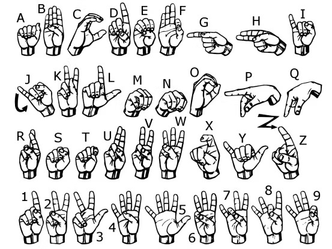
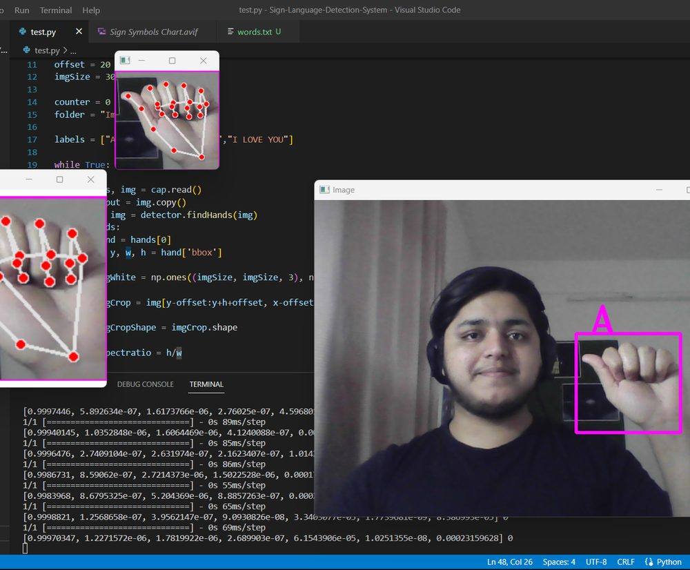

American Sign Language (ASL) is a complex and nuanced language used by the Deaf and Hard of Hearing community to communicate. Due to the lack of automatic sign language recognition systems, communication barriers still exist between the Deaf community and those who do not know ASL. Recent advancements in machine learning and computer vision have enabled the development of ASL recognition systems that can translate sign language into text in real-time.

How It Works
The system is implemented using OpenCV, a hand tracking module, and a classification module.
It captures real-time video using cv2.VideoCapture(), then uses HandDetector from the
cvzone library to detect hands in the feed.
Once a hand is detected, the system crops the video around the hand region using bounding box coordinates, resizes it to 300×300 pixels, and passes it to a Keras classification model. The model is trained to classify 7 different signs. Predictions are displayed on screen alongside a bounding box drawn around the detected hand.
The system also includes a data collection script (data_collection.py) that lets users capture
and save hand sign images for training and testing.
Demo Video
Future Directions
- Integration with wearable technology — smart glasses or smartwatches for hands-free communication.
- Increased vocabulary — expanding beyond 7 signs to include a larger ASL vocabulary and regional dialects.
- Mobile applications — bringing ASL recognition to smartphones for on-the-go accessibility.
- Education tools — integrating into classroom settings to support deaf and hard-of-hearing students.
Summary
The ASL recognition system provides a simple and effective way to recognize hand signs in real-time video feeds. Further improvements could include more advanced deep learning classifiers, better image pre-processing, and handling complex sign gestures or occlusion.

View on GitHub